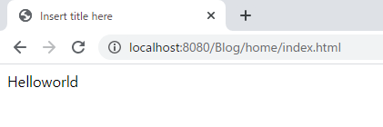
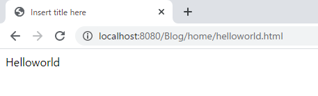
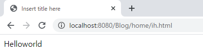
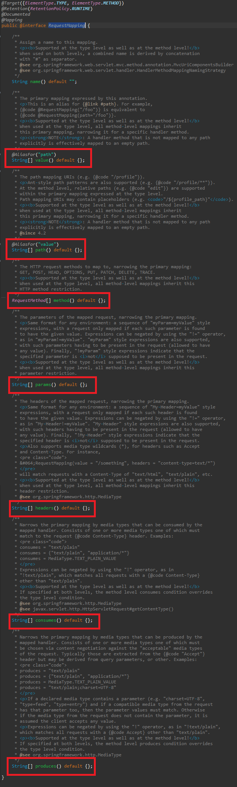
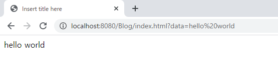
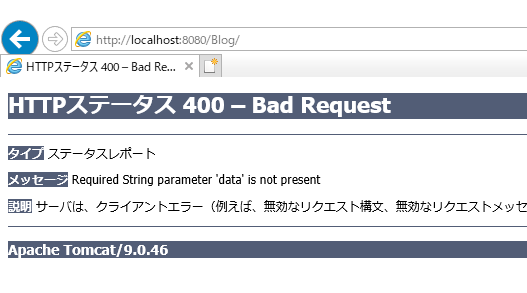
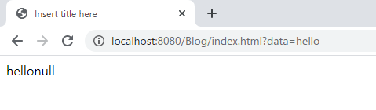

[Java] 40. Web Spring frameworkでControllerを扱う方法
こんにちは。明月です。
この投稿はWeb Spring frameworkでControllerを扱う方法に関する説明です。
以前の投稿でウェブサービスをSpring frameworkを利用して構築する方法に関して説明しました。
link - [Java] 39. Spring Web Frameworkを利用してウェブサービスプロジェクトを作成する方法
Controllerとはクライアント(Browser)から要請があればホストを取り除いたアドレス値をパーシングして当該なメソッドを呼び出す機能です。
このアドレス値でパーシングしてメソッドを呼び出す時に一番やりやすい方法は各のページで呼び出す方法をあり、よく使いますが、その以外には複数ページや正規表現の方法で呼び出す方法もあります。または呼び出すヘッダーの情報やパラメータの値によって呼び出す方法もあります。
@RequestMapping
@RequestMappingとはウェブから要請されたらアドレス値によって探索が可能にするアトリビュートです。このアトリビュートはクラスとメソッドに使えます。
package controller; import javax.servlet.http.HttpServletRequest; import javax.servlet.http.HttpServletResponse; import javax.servlet.http.HttpSession; import org.springframework.stereotype.Controller; import org.springframework.ui.ModelMap; import org.springframework.web.bind.annotation.RequestMapping; // コントロールを設定するアトリビュート @Controller // クラスにはRequestMappingを省略が可能だ。省略すればアドレスからホスト名を取り除いたルートを指す。 @RequestMapping(value = "/home") public class Helloworld { // クラスから分けた下記のアドレスを探索する。 // この例には/home/index.htmlを指す。 @RequestMapping(value = "index.html") public String index(ModelMap modelmap, HttpSession session, HttpServletRequest req, HttpServletResponse res) { // viewに渡すデータ modelmap.addAttribute("Data", "Helloworld"); // viewファイル指定 return "index"; } }
上の例をみれば「/home/index.html」を呼び出したらindex関数が実行されたことを確認できます。
RequestMappingは一つのページをマッピングすることではなく、複数のアドレスを一つの関数に呼び出すことができます。
package controller; import javax.servlet.http.HttpServletRequest; import javax.servlet.http.HttpServletResponse; import javax.servlet.http.HttpSession; import org.springframework.stereotype.Controller; import org.springframework.ui.ModelMap; import org.springframework.web.bind.annotation.RequestMapping; // コントロールを設定するアトリビュート @Controller // クラスにはRequestMappingを省略が可能だ。省略すればアドレスからホスト名を取り除いたルートを指す。 @RequestMapping(value = "/home") public class Helloworld { // クラスから分けた下記のアドレスを探索する。 // この例には/home/index.htmlと/home/helloworld.htmlを指す。 @RequestMapping(value = {"index.html", "helloworld.html"}) public String index(ModelMap modelmap, HttpSession session, HttpServletRequest req, HttpServletResponse res) { // viewに渡すデータ modelmap.addAttribute("Data", "Helloworld"); // viewファイル指定 return "index"; } }
単純にアドレスを指定することより正規表現式によりマッピングすることも可能です。
package controller; import javax.servlet.http.HttpServletRequest; import javax.servlet.http.HttpServletResponse; import javax.servlet.http.HttpSession; import org.springframework.stereotype.Controller; import org.springframework.ui.ModelMap; import org.springframework.web.bind.annotation.RequestMapping; // コントロールを設定するアトリビュート @Controller // クラスにはRequestMappingを省略が可能だ。省略すればアドレスからホスト名を取り除いたルートを指す。 @RequestMapping(value = "/home") public class Helloworld { // クラスから分けた下記のアドレスを探索する。 // この例には/home/(iあるいはhに始まる単語).htmlを指す。 @RequestMapping(value = {"i*.html", "h*.html"}) public String index(ModelMap modelmap, HttpSession session, HttpServletRequest req, HttpServletResponse res) { // viewに渡すデータ modelmap.addAttribute("Data", "Helloworld"); // viewファイル指定 return "index"; } }
呼び出すメソッドタイプによりマッピングすることもできます。
package controller; import javax.servlet.http.HttpServletRequest; import javax.servlet.http.HttpServletResponse; import javax.servlet.http.HttpSession; import org.springframework.stereotype.Controller; import org.springframework.ui.ModelMap; import org.springframework.web.bind.annotation.RequestMapping; // コントロールを設定するアトリビュート @Controller // クラスにはRequestMappingを省略が可能だ。省略すればアドレスからホスト名を取り除いたルートを指す。 @RequestMapping(value = "/home") public class Helloworld { // クラスから分けた下記のアドレスを探索する。 // この例には/home/(iあるいはhに始まる単語).htmlを指す。 // メソッドタイプがGET方式だけ呼び出す。もしPOST方式なら他の関数を呼び出す。(指定されてない場合はマッピング関数がないというエラーが発生) @RequestMapping(value = {"i*.html", "h*.html"}, method = RequestMethod.GET) public String index(ModelMap modelmap, HttpSession session, HttpServletRequest req, HttpServletResponse res) { // viewに渡すデータ modelmap.addAttribute("Data", "Helloworld"); // viewファイル指定 return "index"; } }
その以外にもパラメータ、ヘッダーの値により関数探索が可能です。

仕様により区分して細かく使うことができますが、普通はそんなに細かく分けて設定しないです。細かく使くなったら逆に可読性が悪くなるし、プログラムだけ複雑になります。
私もvalueとmethodの以外は使ったことがありません。
ModelMap
Springでマッピング関数を作成する時にパラメータがなくても構いません。マッピングは@RequestMappingで区分されるからです。
でも、ブラウザにパラメータ値を受け取る時や様々なセッション情報、要請値(Request)、応答値(Response)を使う時があります。
そのため、基本的にModelMap modelmap, HttpSession session, HttpServletRequest req, HttpServletResponse resを使います。
HttpSessionはセッション情報、HttpServletRequestは要請値、HttpServletResponseは応答値があります。この部分はServletと同じです。
ここでModelMapの場合はviewにデータを渡す時に使います。リターンのStringタイプのデータはviewのファイル名をマッピングするしreqやresの値では値を渡すことができないからです。
package controller; import javax.servlet.http.HttpServletRequest; import javax.servlet.http.HttpServletResponse; import javax.servlet.http.HttpSession; import org.springframework.stereotype.Controller; import org.springframework.ui.ModelMap; import org.springframework.web.bind.annotation.RequestMapping; // コントロールを設定するアトリビュート @Controller // クラスにはRequestMappingを省略が可能だ。省略すればアドレスからホスト名を取り除いたルートを指す。 @RequestMapping(value = "/home") public class Helloworld { // クラスから分けた下記のアドレスを探索する。 // この例には/home/index.htmlを指す。 @RequestMapping(value = "index.html") public String index(ModelMap modelmap, HttpSession session, HttpServletRequest req, HttpServletResponse res) { // viewに渡すデータ modelmap.addAttribute("Data", "Helloworld"); // viewファイル指定 return "index"; } }<%@ page language="java" contentType="text/html; charset=UTF-8" pageEncoding="UTF-8"%> <!DOCTYPE html> <html> <head> <meta charset="UTF-8"> <title>Insert title here</title> </head> <body> <!-- ModelMapから受け取ったデータをJSTL言語で表示する。 --> ${Data} </body> </html>
上の例はindex関数でリターンの値をindexに設定したのでview/index.jspをマッピングします。
index.jspファイルの中でJSTL言語にData値を表示することになっています。index関数の中でModelMapを利用してData値を設定します。
@RequestParam
我々がクライアント(Browser)からデータを受け取る時があります。
GET方式ならurlアドレスから?マークに区分して設定するQueryString値により伝えるし、POST方式はform値をsubmitしてプロトコールヘッダーに値を渡す方法があります。
Springでデータを受け取る方法ではパラメータに@RequestParamを利用してパラメータを取得することができます。
package controller; import javax.servlet.http.HttpServletRequest; import javax.servlet.http.HttpServletResponse; import javax.servlet.http.HttpSession; import org.springframework.stereotype.Controller; import org.springframework.ui.ModelMap; import org.springframework.web.bind.annotation.RequestMapping; import org.springframework.web.bind.annotation.RequestParam; // コントロールを設定するアトリビュート @Controller public class Helloworld { // この例には/home/index.htmlを指す。 @RequestMapping(value = "index.html") // パラメータでdataの値を取得する。 public String index(@RequestParam String data, ModelMap modelmap, HttpSession session, HttpServletRequest req, HttpServletResponse res) { // パラメータより受け取ったデータをModelMapに設定する。 modelmap.addAttribute("Data", data); // viewファイル指定 return "index"; } }
でも、私はこの方法をお勧めしていません。なぜならdataの値がnullになるとエラーになるからです。

Servletに使うHttpServletRequest変数を通ってgetParameter関数を利用したらパラメータがnullでも関数が呼び出せます。その後で別に関数の中でnull処理したら良いです。
でも、クライアント(Browser)から渡すデータ値が多い場合、getParameter関数ですべて処理することはソースのステップが多くなると思います。
それで私の場合はModelAttributeのアトリビュートを利用してクラスタイプでデータを受け取ります。
package controller; import javax.servlet.http.HttpServletRequest; import javax.servlet.http.HttpServletResponse; import javax.servlet.http.HttpSession; import org.springframework.stereotype.Controller; import org.springframework.ui.ModelMap; import org.springframework.web.bind.annotation.RequestMapping; import org.springframework.web.bind.annotation.RequestParam; // コントロールを設定するアトリビュート @Controller public class Helloworld { // この例には/home/index.htmlを指す。 @RequestMapping(value = "index.html") // Nodeクラスにパラメータがdataの場合はdata変数に格納、data1の場合はdata1変数に格納する。 public String index(@ModelAttribute Node node, ModelMap modelmap, HttpSession session, HttpServletRequest req, HttpServletResponse res) { // パラメータより受け取ったデータをModelMapに設定する。 modelmap.addAttribute("Data", data); // viewファイル指定 return "index"; } } // パラメータを受け取るためのBeanクラス class Node { // パラメータのdataを受け取る。 private String data; // パラメータのdata1を受け取る。 private String data1; // data変数のgetter public String getData() { return data; } // data変数のsetter public void setData(String data) { this.data = data; } // data1変数のgetter public String getData1() { return data1; } // data1変数のsetter public void setData1(String data1) { this.data1 = data1; } }
上の処理はdataのパラメータの場合はデータ値があるのでそのまま表示されましたが、data1のパラメータの場合は設定してないのでnullが表示されますね。
ここまでクライアント(Browser)から呼び出したらControllerから処理してviewをパーシングして最終結果を応答します。
でも、ウェブサービスの中でウェブページを要請すると当然ページをリターンするが、ajaxの場合はどのように処理するでしょう？
ajaxはウェブページが必要なことではなく、Controllerで処理した値をjsonやデータ構造に変換しなければならないです。
次の投稿ではSpring frameworkでajaxを処理する方法に関して説明します。
ここまでWeb Spring frameworkでControllerを扱う方法に関する説明でした。
ご不明なところや間違いところがあればコメントしてください。
- [Java] 47. JPAのEntityクラスのリファレンス設定(cascade, fetch)2019/10/13 00:40:08
- [Java] 46. JPAのEntityクラスの基本設定(@GeneratedValue、 @ManyToMany)2019/10/11 07:30:14
- [Java] 45. JPAを設定する方法2019/10/10 07:29:43
- [Java] 44. Web Spring frameworkのviewで使うプログラム言語(JSTL) - XML2019/10/09 07:34:08
- [Java] 43. Web Spring frameworkのviewで使うプログラム言語(JSTL) - 関数、データベース2019/10/08 07:43:33
- [Java] 42. Web Spring frameworkのviewで使うプログラム言語(JSTL) - コア―、フォーマット2019/10/07 07:38:13
- [Java] 41. Web Spring webframeworkのControllerからajaxの要請する時、jsonタイプのデータを返却する方法2019/10/04 19:24:43
- [Java] 40. Web Spring frameworkでControllerを扱う方法2019/10/03 20:02:06
- [Java] 39. Spring Web Frameworkを利用してウェブサービスプロジェクトを作成する方法2019/10/02 21:00:22
- [Java] 38. Javaでウェブサービスプロジェクト(JSP Servlet)を作成する方法2019/10/01 21:48:08
- [Java] 37.イクリプス(eclipse)でトムキャット(tomcat)を設定する方法2019/09/30 22:19:34
- [Java] 36.コーディングする時、よく使うコーディングパターンとステップ数を減らす方法2019/09/27 20:39:09
- [Java] 35. コーディング規約設定(Google Standard coding style)2019/09/26 21:31:25
- [Java] 34. WindowでMariaDBをインストールする方法2019/09/25 19:58:30
- [Java] 33. オープンライブラリを参照する方法(eclipseからmavenを連結)2019/09/24 19:35:54
- [C#] 47. Nugetを使い方(外部ライブラリ)とデータベース(MariaDB(Mysql))を使い方、そしてトランザクション(Transaction)2021/10/08 18:58:57
- [Window] MariaDBをインストールする方法2021/10/08 18:56:05
- [C#] 46. データベース(MSSQL)に接続する方法2021/10/07 18:39:58
- [C#] 45. ネットワークソケット通信(Socket)を使い方2021/10/06 19:06:25
- [C#] 44. ファイル(FileInfo)とディレクトリ(DirectoryInfo)を扱い2021/10/05 19:29:34
- [C#] 43. ストリーム(Stream)とバイナリ(byte[])、エンコード(Encoding)、そしてusingを使い方とIDisposableインターフェース2021/10/04 18:33:04
- [C#] 42. ファイルを扱い(IO)とファイルメタデータ(FileInfo)を使い方2021/10/01 20:10:21
- [C#] 41. Taskクラスとasync、awaitを使い方2021/10/01 18:59:14
- [Javascript ] WebのFull calendar(スケジュールカレンダー)の使い方法2021/07/15 21:35:36
- [Java] 56. Web serviceのサーブレット(Servlet)で初期化作業(properties設定)2021/07/02 17:10:36
- [Java] 55. Spring frameworkに文字化けを解決する方法(Encoding設定)2021/06/30 16:37:16
- [Java] 54. Spring frameworkでWeb filterを使う方法2021/06/29 18:25:12
- [Java] 53. ウェブサービス(Web service)でエラーページを処理する方法2021/06/25 13:35:54
- [Design pattern] 1-3. ファクトリメソッドパターン(Factory method pattern)2021/06/23 19:45:37
- [Java] WebSocketでチャット履歴をローディングする方法2021/06/15 18:34:45